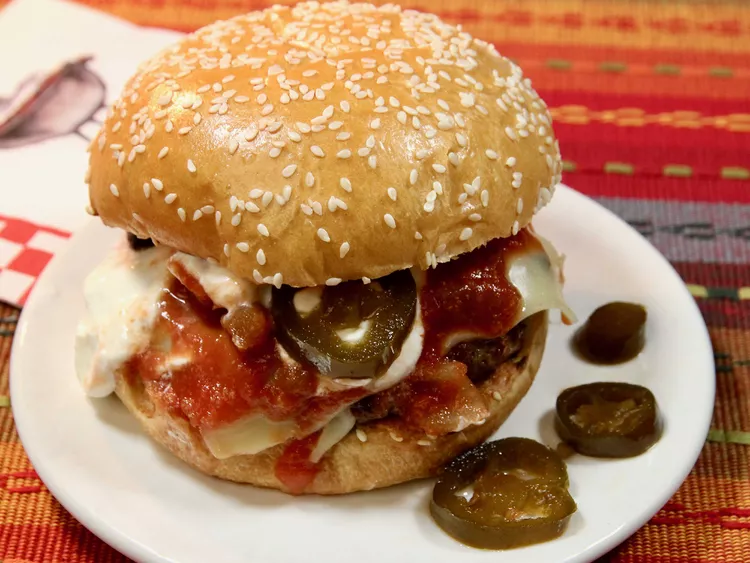

Home
Sizzling Southwest Burgers

Description
These zesty burgers are bursting with flavor. Taco seasoning, peppers, and
pepperjack cheese give ground beef a boost. Then the patties are served up
on buns with sour cream and salsa. A fun twist on barbecued burgers!
Ingredients
- 1 (16 ounce) container sour cream
- 3 cups all-purpose flour
- 2 cups cold mashed potatoes
- ½ cup butter
- 2 large onions, chopped
Steps
-
Preheat grill for high heat.
-
In a large bowl, mix together the ground beef, taco seasoning mix, bell
pepper and onion using your hands. Form into 6 patties.
-
Lightly oil the grill grate. Cook burger patties for 5 minutes per side,
or until well done. Place buns cut side down onto the grill to toast
during the last minute or so. Top each burger with a slice of cheese
before removing from the grill. Serve burgers on toasted buns topped
with salsa and sour cream.